Remote Sensing & GIS in Environmental Technology
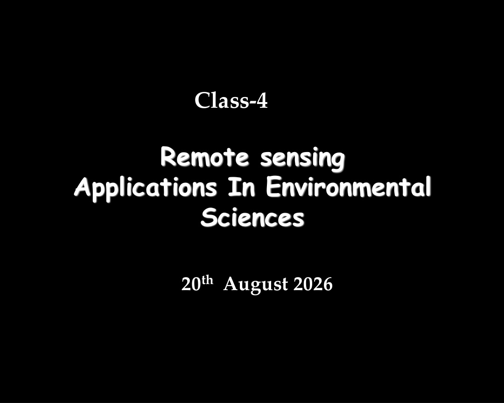
Remote sensing
- •Remote sensing Applications In Environmental Sciences 20th August 2026
Satellite remote sensing measures reflected and emitted electromagnetic radiation across visible, near-infrared (NIR), and shortwave-infrared (SWIR) bands. Healthy green vegetation absorbs red light for photosynthesis and strongly scatters NIR light at the spongy mesophyll layer, allowing multispectral indices like NDVI to quantify plant vigor and track regional land cover change over decades.
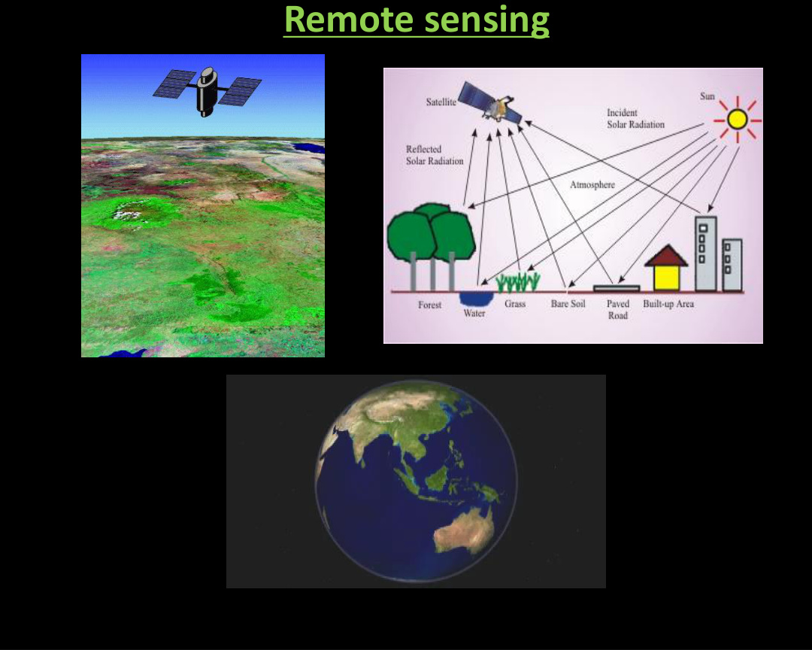
Remote sensing
- •Remote sensing
Satellite remote sensing measures reflected and emitted electromagnetic radiation across visible, near-infrared (NIR), and shortwave-infrared (SWIR) bands. Healthy green vegetation absorbs red light for photosynthesis and strongly scatters NIR light at the spongy mesophyll layer, allowing multispectral indices like NDVI to quantify plant vigor and track regional land cover change over decades.
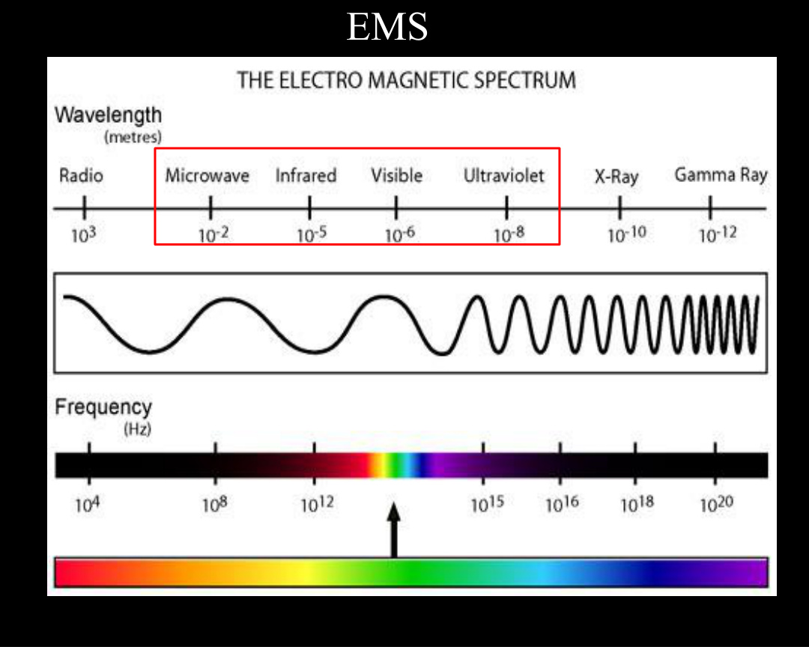
EMS
Visual figure slide. See the high-resolution render on the left.
EMS illustrates key empirical observations and visual relationships in Lecture 04. It provides field data, case evidence, or system diagrams that support the quantitative and regulatory concepts taught in this topic.
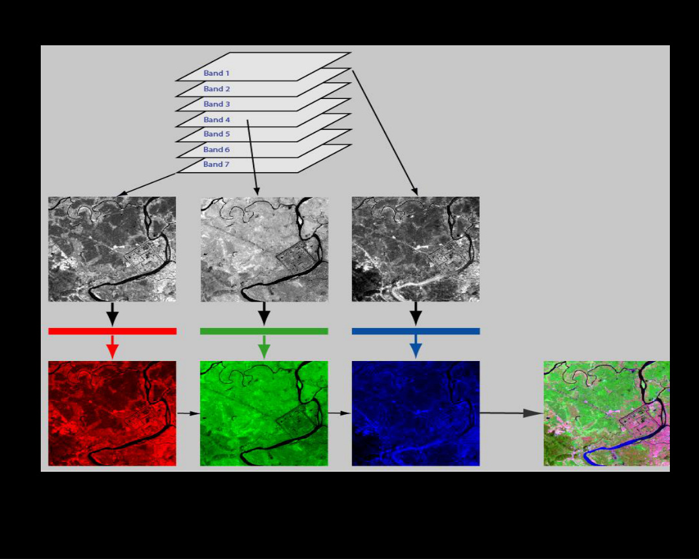
Slide 4
Visual figure slide. See the high-resolution render on the left.
Lecture 04 figure 4 illustrates key empirical observations and visual relationships in Lecture 04. It provides field data, case evidence, or system diagrams that support the quantitative and regulatory concepts taught in this topic.
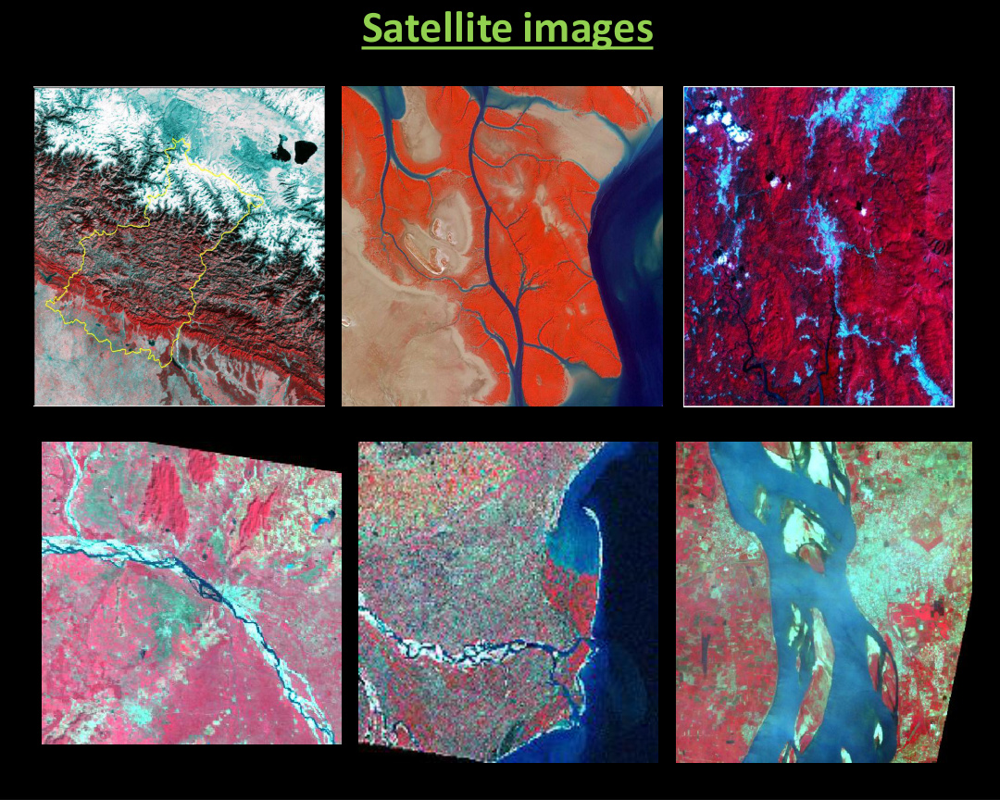
Satellite images
- •Satellite images
Satellite images: Satellite images. This material establishes quantitative limits, operational trade-offs, and core exam principles for Lecture 04.
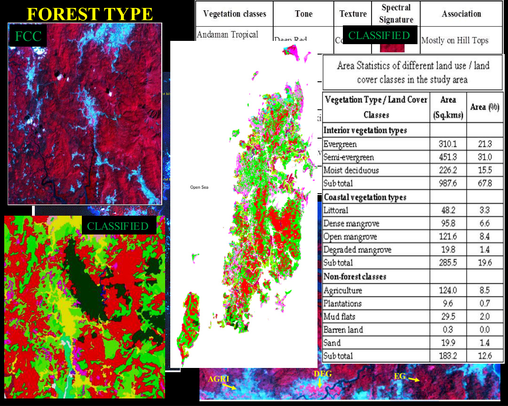
Electromagnetic Spectrum: Atmospheric Transmission Windows
- •FOREST TYPE MAPPING SEG MANGROVE
Electromagnetic Spectrum: Atmospheric Transmission Windows: FOREST TYPE MAPPING SEG MANGROVE. This material establishes quantitative limits, operational trade-offs, and core exam principles for Lecture 04.
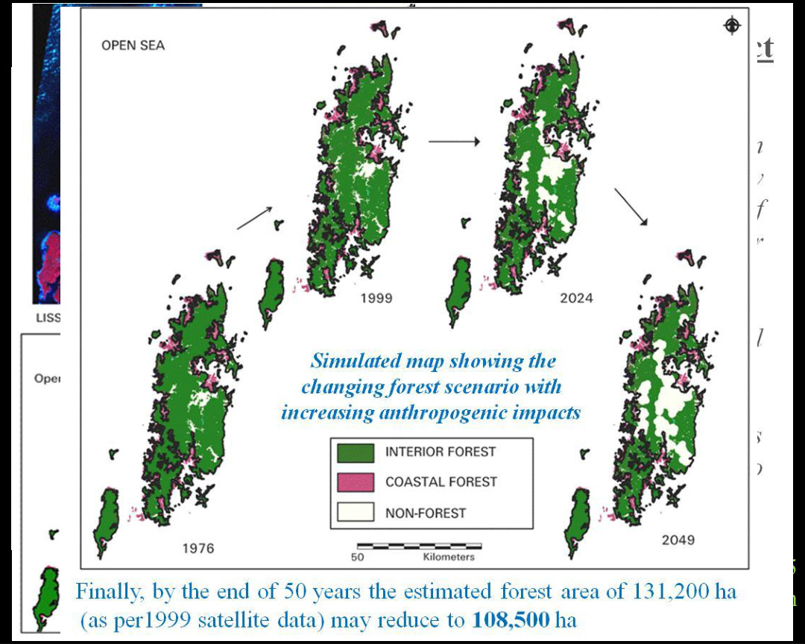
Forest Change Detection
- •Forest Change Detection Analysis of the 1976 (MSS) and 1999 (LISS III) images showed a loss of 12.5 % (5.0 % interior and 7.5 % coastal) of forest with a corresponding increase in non-forest area
Forest Change Detection: Forest Change Detection Analysis of the 1976 (MSS) and 1999 (LISS III) images showed a loss of 12.5 % (5.0 % interior and 7.5 % coastal) of forest with a corresponding increase in non-forest area. This material establishes quantitative limits, operational trade-offs, and core exam principles for Lecture 04.
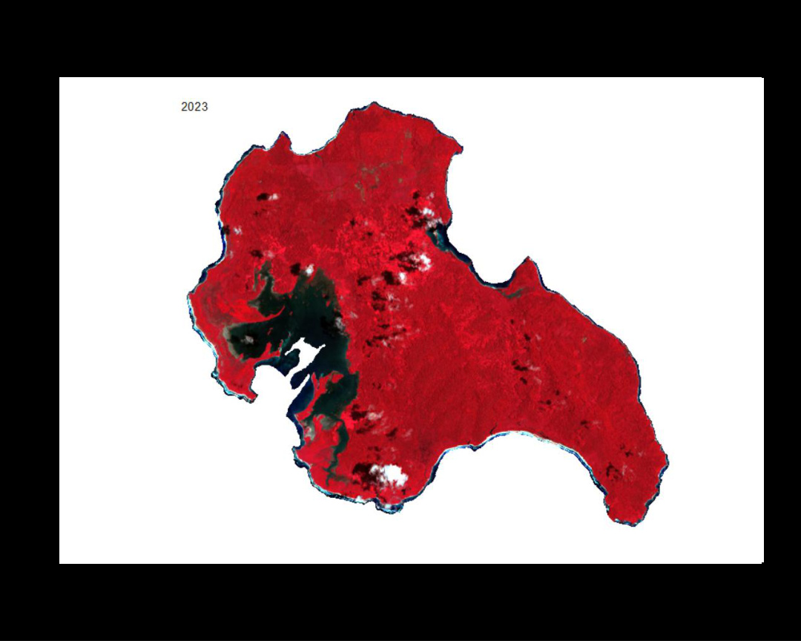
Spectral Reflectance Signatures of Healthy Vegetation, Water, and Soil
Visual figure slide. See the high-resolution render on the left.
Satellite remote sensing measures reflected and emitted electromagnetic radiation across visible, near-infrared (NIR), and shortwave-infrared (SWIR) bands. Healthy green vegetation absorbs red light for photosynthesis and strongly scatters NIR light at the spongy mesophyll layer, allowing multispectral indices like NDVI to quantify plant vigor and track regional land cover change over decades.
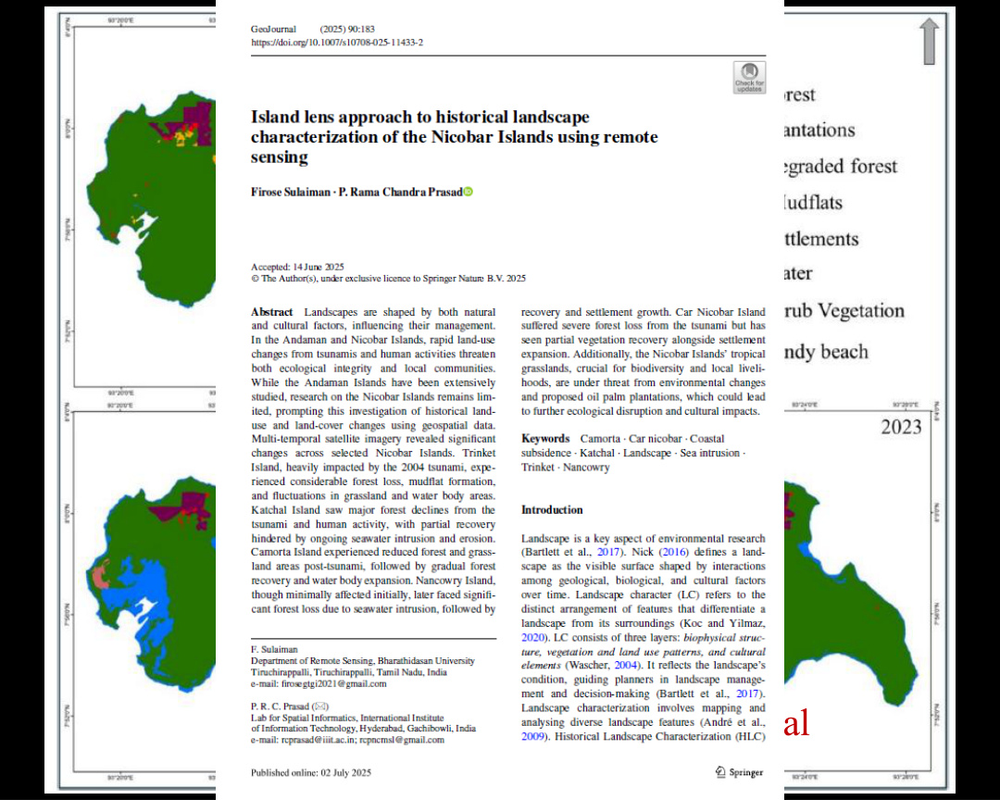
Katchal
- •Katchal
Katchal illustrates key empirical observations and visual relationships in Lecture 04. It provides field data, case evidence, or system diagrams that support the quantitative and regulatory concepts taught in this topic.
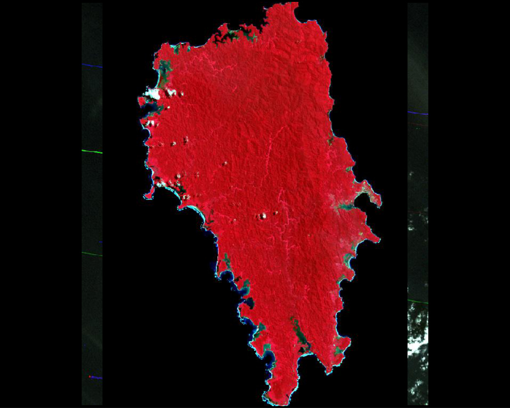
Slide 10
Visual figure slide. See the high-resolution render on the left.
Lecture 04 figure 10 illustrates key empirical observations and visual relationships in Lecture 04. It provides field data, case evidence, or system diagrams that support the quantitative and regulatory concepts taught in this topic.
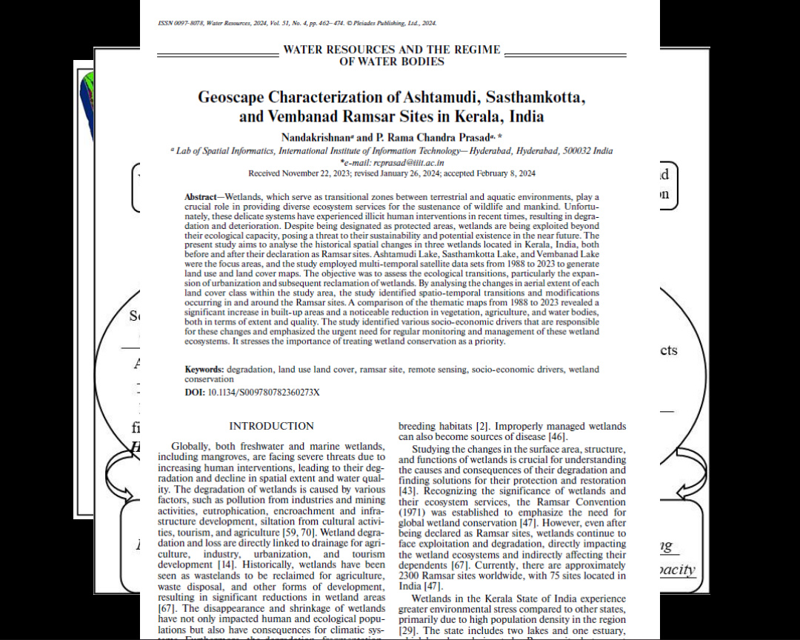
Slide 11
Visual figure slide. See the high-resolution render on the left.
Lecture 04 figure 11 illustrates key empirical observations and visual relationships in Lecture 04. It provides field data, case evidence, or system diagrams that support the quantitative and regulatory concepts taught in this topic.
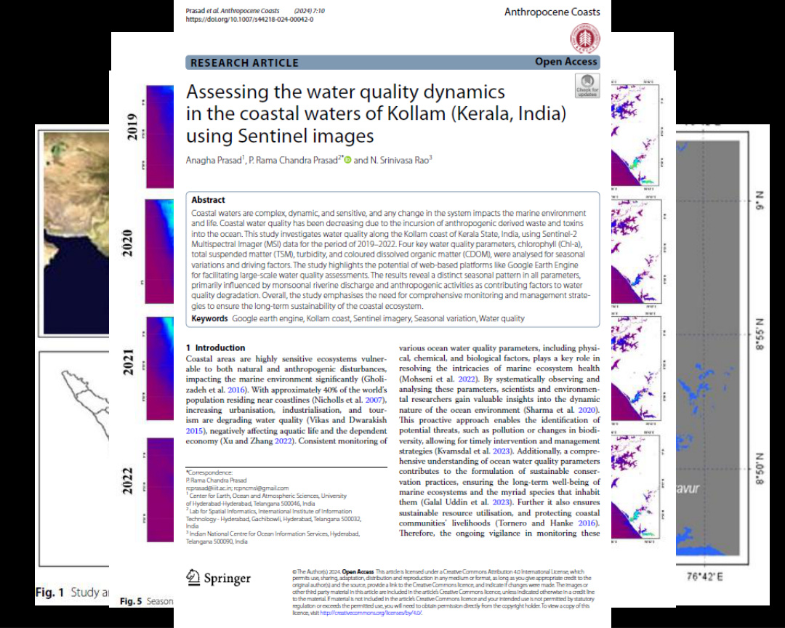
Satellite Sensor Comparison: Landsat, IRS LISS-III, and Sentinel-2
- •Assessing the water quality dynamics in the coastal waters of Kollam (Kerala, India) using Sentinel images
Satellite remote sensing measures reflected and emitted electromagnetic radiation across visible, near-infrared (NIR), and shortwave-infrared (SWIR) bands. Healthy green vegetation absorbs red light for photosynthesis and strongly scatters NIR light at the spongy mesophyll layer, allowing multispectral indices like NDVI to quantify plant vigor and track regional land cover change over decades.
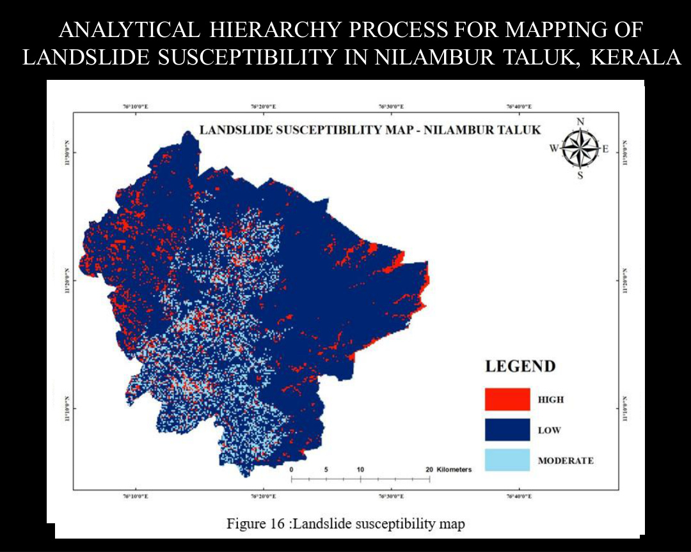
ANALYTICAL HIERARCHY PROCESS FOR MAPPING OF
- •ANALYTICAL HIERARCHY PROCESS FOR MAPPING OF LANDSLIDE SUSCEPTIBILITY IN NILAMBUR TALUK, KERALA
ANALYTICAL HIERARCHY PROCESS FOR MAPPING OF: ANALYTICAL HIERARCHY PROCESS FOR MAPPING OF LANDSLIDE SUSCEPTIBILITY IN NILAMBUR TALUK, KERALA. This material establishes quantitative limits, operational trade-offs, and core exam principles for Lecture 04.
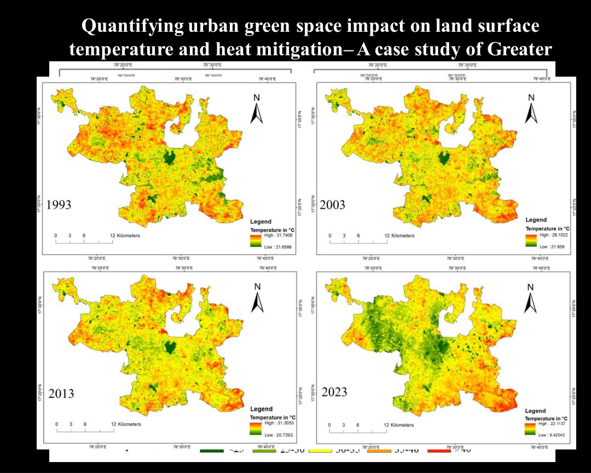
Quantifying urban green space impact on land surface
- •Quantifying urban green space impact on land surface temperature and heat mitigation– A case study of Greater Hyderabad Municipal Corporation, Telangana, India Figure 1: Location Map of GHMC
Quantifying urban green space impact on land surface: Quantifying urban green space impact on land surface temperature and heat mitigation– A case study of Greater Hyderabad Municipal Corporation, Telangana, India Figure 1: Location Map of GHMC. This material establishes quantitative limits, operational trade-offs, and core exam principles for Lecture 04.
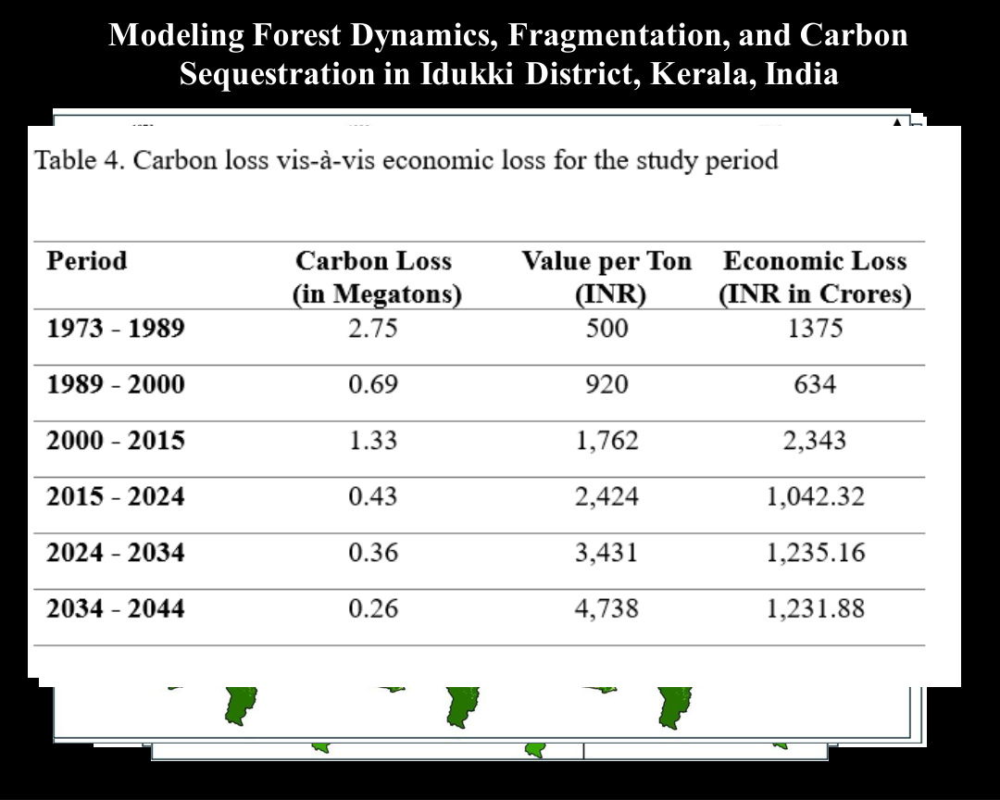
Modeling Forest Dynamics, Fragmentation, and Carbon
- •Modeling Forest Dynamics, Fragmentation, and Carbon Sequestration in Idukki District, Kerala, India
Terrestrial carbon sequestration stores atmospheric $CO_2$ in plant biomass and soil organic matter. Dry forest biomass contains approximately 50% elemental carbon, converting to $CO_2$ equivalents through the molecular mass ratio $44/12 \approx 3.67$. Protecting old-growth forest soils and restoring degraded land maintains active terrestrial carbon sinks without industrial energy penalties.
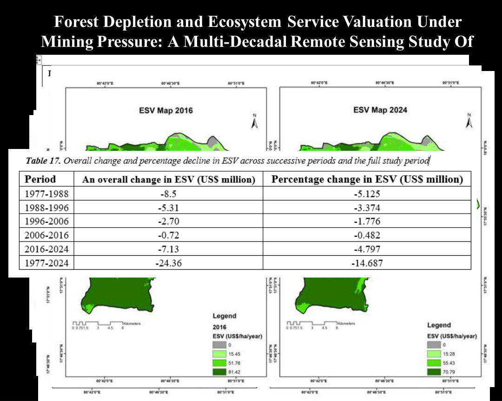
Urban Heat Island Mitigation and Land Surface Temperature in GHMC
- •Forest Depletion and Ecosystem Service Valuation Under Mining Pressure: A Multi-Decadal Remote Sensing Study Of Manuguru Coal Belt, Telangana, India
Satellite remote sensing measures reflected and emitted electromagnetic radiation across visible, near-infrared (NIR), and shortwave-infrared (SWIR) bands. Healthy green vegetation absorbs red light for photosynthesis and strongly scatters NIR light at the spongy mesophyll layer, allowing multispectral indices like NDVI to quantify plant vigor and track regional land cover change over decades.
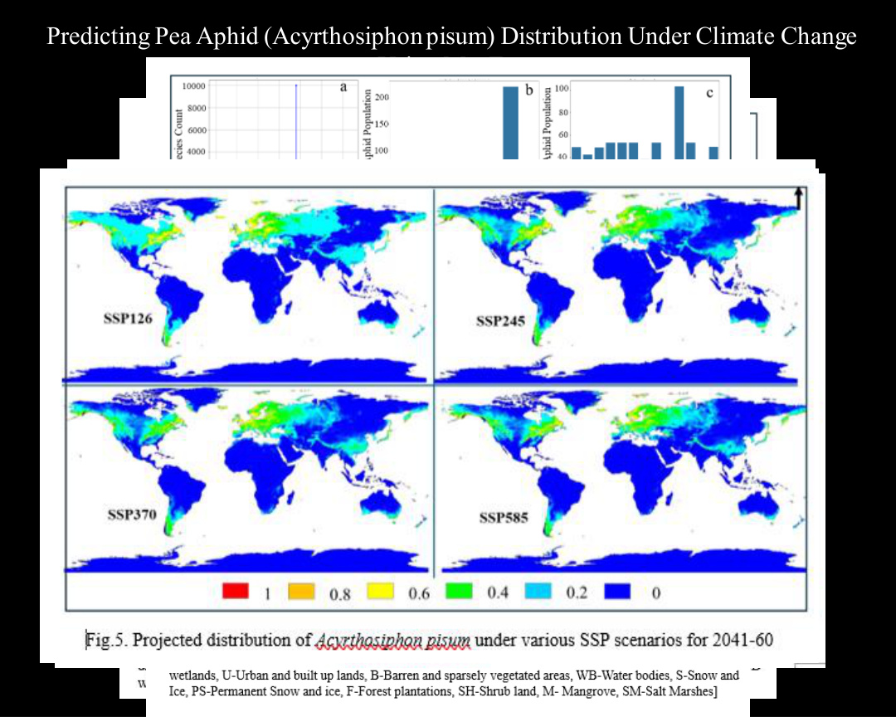
Predicting Pea Aphid (Acyrthosiphon pisum) Distribution Under ...
- •Predicting Pea Aphid (Acyrthosiphon pisum) Distribution Under Climate Change Using MaxEnt
Predicting Pea Aphid (Acyrthosiphon pisum) Distribution Under ...: Predicting Pea Aphid (Acyrthosiphon pisum) Distribution Under Climate Change Using MaxEnt. This material establishes quantitative limits, operational trade-offs, and core exam principles for Lecture 04.
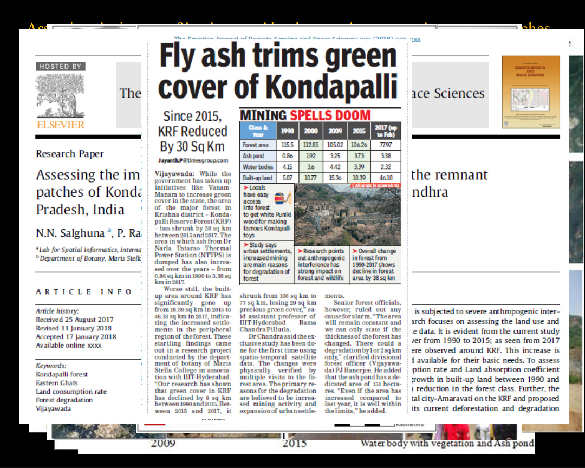
Assessing the impact of land use and land cover changes on the...
- •Assessing the impact of land use and land cover changes on the remnant patches of Kondapalli reserve forest of the Eastern Ghats, Andhra Pradesh, India
Assessing the impact of land use and land cover changes on the...: Assessing the impact of land use and land cover changes on the remnant patches of Kondapalli reserve forest of the Eastern Ghats, Andhra Pradesh, India. This material establishes quantitative limits, operational trade-offs, and core exam principles for Lecture 04.
️ Multispectral Remote Sensing & NDVI Vegetation Index Visualizer
Simulate spectral reflectance in Red and NIR bands, calculate NDVI, and determine land cover classification.
Active recall flashcards
Review definitions, reactions, and governing laws from the lecture slides before flipping.
Exam traps and common pitfalls
Common student misconceptions and subtle distinctions tested in exams.
- Exam trap: Confusing Spatial Resolution with Temporal Resolution. High spatial resolution (e.g. 0.5m WorldView) often comes with poor temporal revisit (weeks), whereas MODIS offers daily revisit at coarse 250m-1km spatial resolution.
- Exam trap: Thinking water has high NDVI. Water absorbs almost 100% of NIR radiation, making $\rho_{\text{NIR}} \approx 0$, which results in a distinctly negative NDVI.
Concept check quiz
Verify your understanding of core concepts from this lecture deck.
Slide reference gallery
Complete visual reference of all 18 slides with direct links to original presentation files.